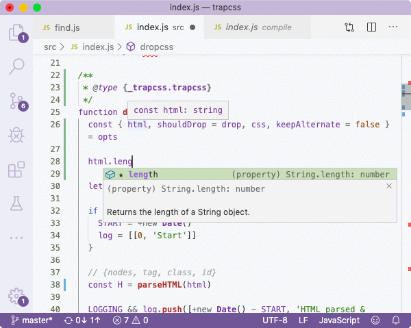

On the screenshot above, you can see how the IDE provides me with autocompletion hint when I'm trying to get access to the `.length` property, for example to check that HTML is not empty. This is essential for developer experience of the person who's coding the package, so by simply importing the type, we were able to achieve this productivity without full _JSDoc_ with `@param {Object}` comments. Sadly, _VSCode_ does not show the description of the property, otherwise it'd be really perfect, but maybe they can do it in the next version. So we just update the source code to pass destructured properties, and the new `keepAlternate` additional property to the ``parseCSS`` method. The `keepText` second argument for _parseHTML_ is not even accepted by this function, so we remove it. ```js // const H = parseHTML(opts.html, !opts.keepText) => const H = parseHTML(html) // const shouldDrop = opts.shouldDrop || drop => // default is now assigned via destructuing // above { shouldDrop = drop, ... } = opts // let tokens = parseCSS(opts.css) => let tokens = parseCSS(css, keepAlternate) ```